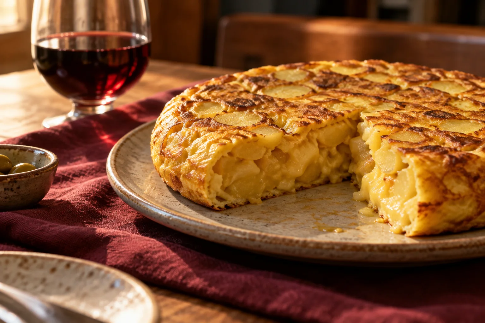

BIENVENIDOS A LA TABOLA
El buen comer tiene mesa en Logroño.
Cocina de siempre, nuevos sabores y ese momento que se alarga porque nadie quiere levantarse.
TRADICIÓN RIOJANA
CON GANAS DE SORPRENDER
CON GANAS DE SORPRENDER

HECHO PARACOMPARTIRLOGROÑO · LA RIOJA
EL PLACER DE SENTARSE A LA MESA / 01
02 / NUESTRA MANERA DE HACERBUENA COCINA. BUENA COMPAÑÍA.
LA TABOLA GASTROBAR
Hay historias que empiezan alrededor de una mesa.
Más de 40 años de experiencia en la hostelería riojana nos han enseñado lo importante: cuidar el producto, disfrutar del oficio y recibirte como se merece una buena comida.
En La Tabola, la cocina clásica se encuentra con sabores de otros lugares. El resultado se disfruta aquí, sin prisas.
CONOCE DÓNDE ESTAMOS03 / ENCUÉNTRANOSLOGROÑO, LA RIOJA
TU PRÓXIMA BUENA MESA